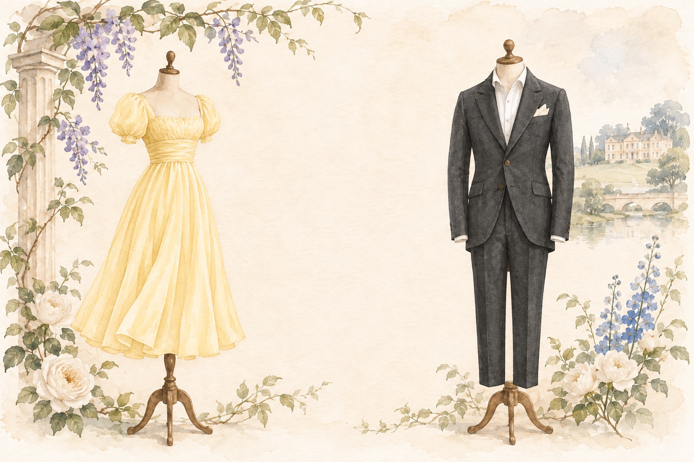

La boda de
Loris & Mariana
Cerdeña, Italia
Querida familia y amigos,
Nos encantaría celebrar este día con ustedes.
Loris & Mariana
Cuatro países, una historia
Venezuela · Colombia · Italia · Alemania
Texto de muestra
En esta versión de su historia, Loris y Mariana se conocieron en una cena que se alargó hasta que apagaron las luces. La primera conversación saltó de las recetas de casa a los lugares que querían visitar. Antes de despedirse ya habían quedado para volver a verse.
Con el tiempo, las raíces en Venezuela, Colombia, Italia y Alemania se hicieron presentes en las sobremesas, en las palabras que se prestaban y en los viajes para conocer a sus familias. Ahora imaginan una mesa en Cerdeña, con el mar cerca y todas esas voces conversando a la vez.


Día y lugar
Faltan
Ceremonia
Lugar por confirmar
Recepción
Lugar por confirmar
Dress Code
Cóctel

Para la armonía estética de nuestra celebración, les agradeceríamos evitar el color azul en su vestuario.
¿Qué hacer en Cerdeña?

Alghero
Pasea por el casco antiguo y las murallas de Alghero.
Castelsardo
Sube al castillo de los Doria y baja a la playa de Lu Bagnu.
La Maddalena
Dedica un día al archipiélago. Consulta el ferry desde Palau antes de salir.
Mira los tiempos de traslado antes de reservar alojamiento y lleva algo de abrigo para la noche.

Regalos
Tu presencia es nuestro mejor regalo. Si quieres traer un detalle, que quepa en una maleta.
¿Nos acompañas?
Confirma hasta el 31 de diciembre de 2026